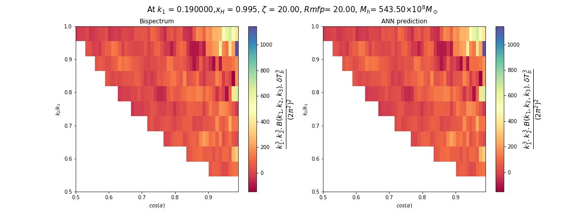

How to use¶
from source¶
clone from github:
$ git clone https://github.com/himmng/EmuPBk.git
$ cd EmuPBk
$ python setup.py install --user
visualizing predictions¶
Animating test prediction powerspectrum:
from EmuPBk.visualize import Animate_Pk
animation = animate_pk(test_data, test_params, k, xh, load_model, norm)
'''
:param: test_data : test_data(powerspectum)
:param: test_params : test_parameters of EoR
:param: k: corresponding k-values
:param: load_model: load model from a directory path, default: uses existing models.
:param: norm: normalizing factor, default is no rescaling = 1
:returns: animation between test_data and ANN predictions
'''
animation.get_Animation_Pk()
creates pk.gif at present working directory.

Bispectrum:
For Unique (k2/k1 vs Cos(θ)) parameter space:
from EmuPBk.visualize import Animate_Bk
animation = Animate_Bk(test_data,test_params,load_model,xHI,
k1,cos_min,cos_max, cos_step,
k2byk1_min,k2byk1_max,k2byk1_step,rescale)
'''
It will give the animation of real bispectrum vs ANN predictions
for only Unique triangle space configuration.
:param: test_data : test_data(Bispectrum)
:param: test_params : test_parameters of EoR
:param: ntri: number of triangles contributes in each bisepctrum.
:param: xh : neutral fraction
:param: load_model: load_your own model from a directory path, (default: uses existing model)
:param: costheta: provide cos_min and cos_max and its step
:param: k2byk1: provide the range of k2byk1 and its step
:param: norm: normalizing factor, (default: 100.)
'''
animation.get_animation_bk()
creates gif animation.
ANN accuracy & loss on training and validation set:
MCMC sampler¶
The MCMC sampling is done using emcee based CosmoHammer
All the custom core and likelihood modules are already in the EmuPBk’s MCMC class.
from EmuPBk.MCMC import sampler
mcmc = sampler.Run_MCMC(data,nbins,noise,div)
'''
:param data: load the data
:param nbins: data for covariance calculation
:param noise: noise inclusion
:param div: likelihood normalization factor
'''
use existing models¶
mcmc.load_existing_model(name = 'pk')
'''
Use the existing ANN models for MCMC analysis
:param name: use ('pk','bk')==>for powerspectrum, bispectrum
'''
mcmc.sampler(walker_ratio=6, burnin=200, samples=200, num=0, threads=-1)
use custom models¶
mcmc.load_model(load_model,name,norm)
'''
:param load_model: load the model, (give the path)
:param name: name of data, ('pk','bk')==> for powerspectrum, bispectrum
:param norm: normalising factor used in the training
'''
mcmc.sampler(walker_ratio=6, burnin=200, samples=200, num = 2,threads=-1)
MCMC posterior¶
This module works only for re-ionization parameters (ζ, Rmfp, Mhmin).
from EmuPBk import visualize
plot = visualize.Get_Posterior(data=data)
plot.corner()